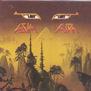

| Artist: | Asia |
| Title: | Aura |
| Label: | Recognition Records CDRECX501 |
| Length(s): | 79 minutes |
| Year(s) of release: | 2000 |
| Month of review: | {04/2001] |
| 2) | Wherever You Are | 4.48 |
| 3) | Ready To Go Home | 4.47 |
| 4) | The Last Time | 4.58 |
| 5) | Forgive Me | 5.23 |
| 6) | Kings Of The Day | 6.41 |
| 7) | On The Coldest Day In Hell | 6.25 |
| 8) | Free | 8.12 |
| 10) | The Longest Night | 5.21 |
| 11) | Aura | 4.44 |
| 12) | Under The Gun (bonus) | 4.49 |
| 13) | Come Make My Day (bonus) | 5.02 |
Wherever You Are is another very accessible track, and it seems the music on this record has been made for AOR radio. REady To Go Home I already knew, but when performed by a different artist, Morten Harket of A-Ha. The song is like its predecessor written by Gold and Gouldman (aka Wax). The version is quite similar to that of Harkey, but the vocals of Harket are simply better, more emotional. A mellow, but likable track which features Tony Levin on bass. The song does have a bit more keyboards than the version I know.
Crichton and Howe feature on The Last Time. Especially the presence of the latter is notable as the background of the main guitar solo. This somewhat bouncy track does have something of Saga, but stays in pop regions, never getting to the rock at all. A nice catchy chorus to the track, and again the tones and notes of Howe lining the music.
Forgive Me could have a been contemporary dance track. No risks taken on this one. Very weak. The keyboard intermezzo is also not great. Kings Of The Day is a bit longer, but also on the mellow side. An easy going tempo, but also some more cutting guitar playing on this one and fluent drumming.
On The Coldest Day In Hell opens with acoustic guitar and balladic vocals. The voice of John Payne is not particularly striking in general, but he certainly has a pleasant voice and can convey emotion if he wants to. He can be most easily be compared to the vocalist of Magnum, Bob Catley, in fact the music of both bands is also quite comparable. Maybe Asia, on this record, has chosen the side of pop a bit more. The vocal melodies are rather nice on this long track, but the music continues to be very safe. This also holds for the hazy intermezzo which is rich in soft keyboards.
Free is with over eight minutes the longest track on the album. A strong keyboard presence give this song an certain urgence. Not only Crichton and Howe play guitar on this track, but Pat Thrall as well. The bleepy keyboards are lined by rhythm guitar and in this way the song obtains a somewhat dark radiance. The vocal parts continue to be very accessible. One of the more distinctive and interesting tracks so far, especially with the driving melodic guitaristic intermezzo and the bombastic ending.
You're The Stranger brings us to somewhat somewhat Latin tinged music. A lot of percussion, quite a bit of bounce and a jazzrockish guitar solo. Not very strong. The Longest Night opens with dramatic guitar playing and is quite a nice track.
The instrumental closer of the album is not of the type we have come to expect from Asia. Most of the time this track is a synthy, orchestral track by Downes, but this time the music is more Latin, because of the percussion of Luis Jardim. Maybe to latch on to the recent popularity of Santana?
Under The Gun is the first of the bonus tracks. Relaxed mid-tempo material with an okay chorus, but for the rest not interesting. Come Make My Day opens with acoustic guitar, I guess this will be a ballad. The song is very poppy and has again that eighties pop feel. The intermezzo is of the keyboard kind and more or less what I have come to expect from Downes. The final guitar solo is quite good, and played by Crichton.
The final track is the strongest surprise. Have we ended up with the wrong band? The opening is strongly reminiscent of UK and although Steve Howe is not listed among the sidemen here, his presence is felt. A poppy, bombastic track, but one in which the rock figures most, which its brimming organ and electric guitars. In the middle the UK influence returns again. A terrific tense keyboard solo leads up to pounding drums and an electric guitar solo. The catchy vocals then return.
The artwork is as always a Roger Dean effort and the digipack is a nice looking one.